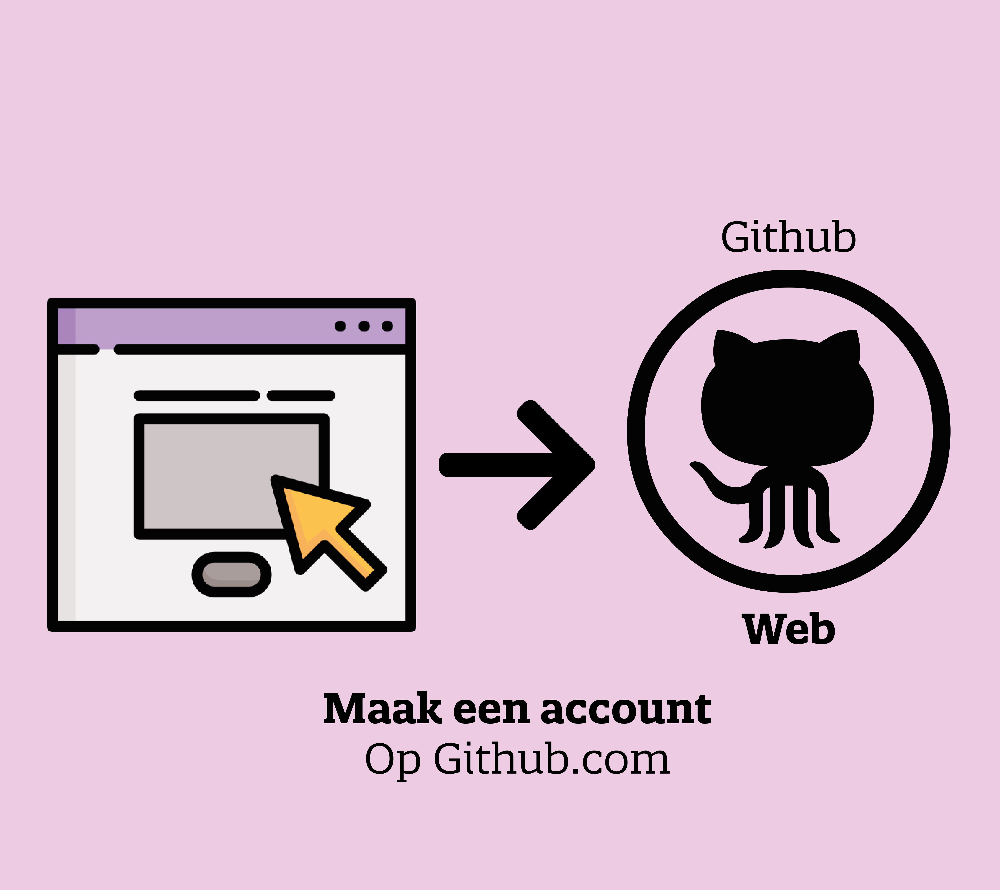
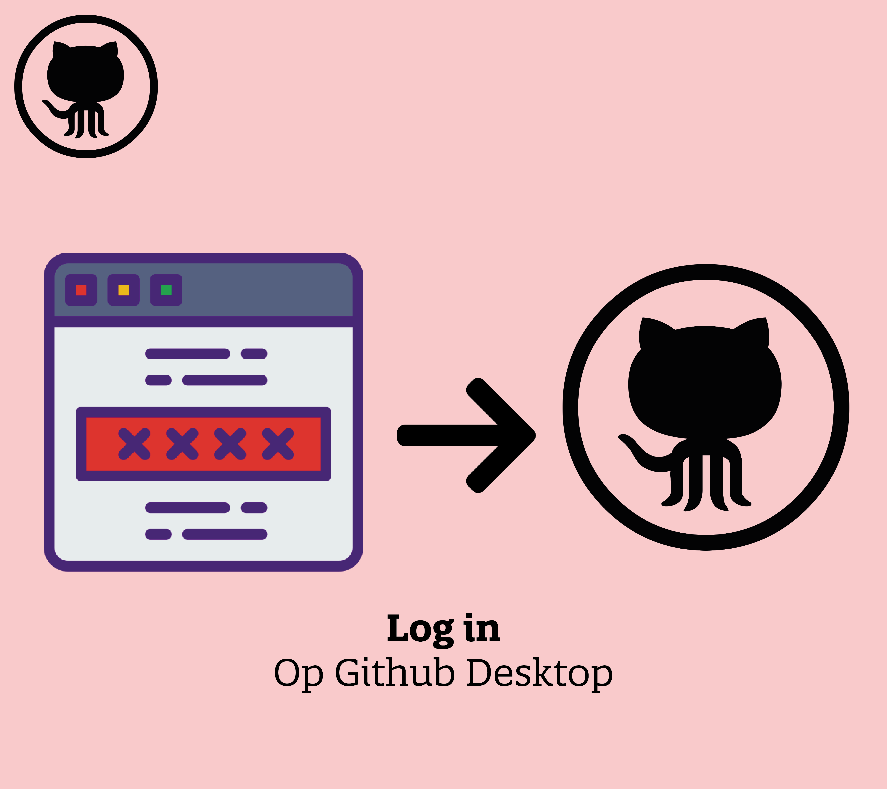
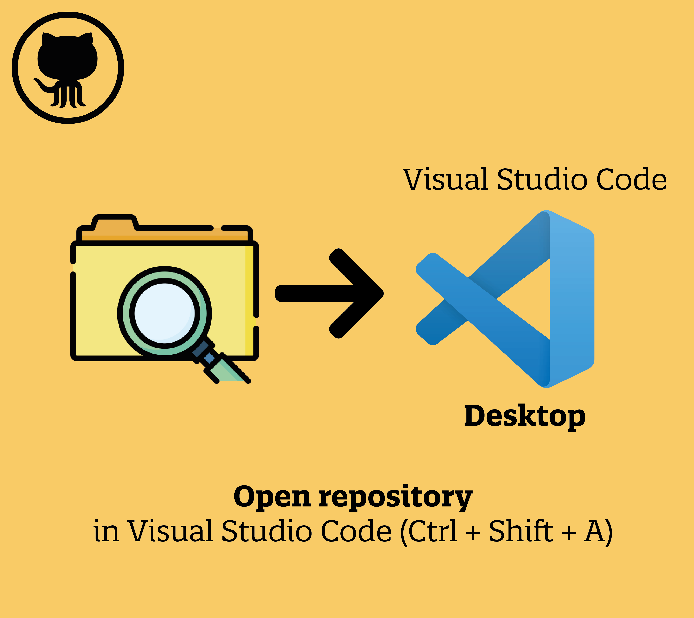
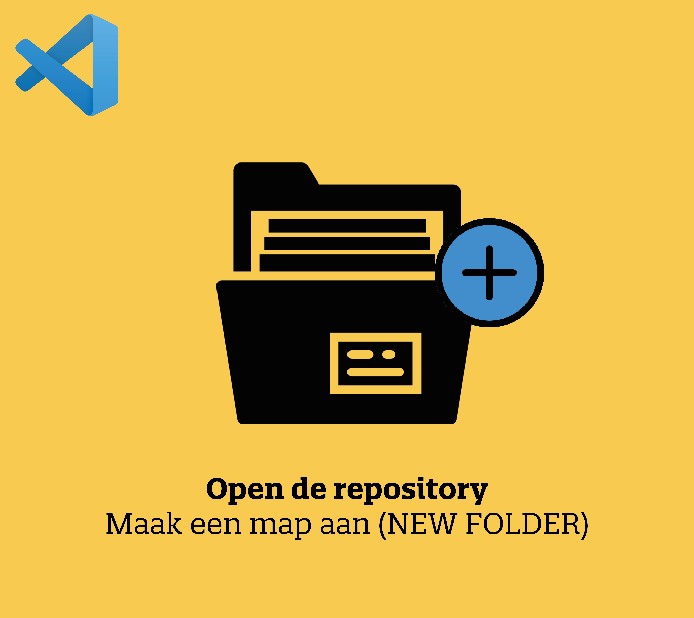

Stap 1:
Maak een account aan op Github
Eerst moet er een account worden aangemaakt op Github (Zie deze link)

Stap 2:
Download de volgende drie dingen:
Github Desktop (Zie deze link)
Git (Zie deze link)
Visual Studio Code Desktop (Zie deze link)
Deze downloads zijn nodig om te kunnen starten met html/css en je werk te kunnen delen met andere personen.
Stap 3:
Open Github Desktop op je computer
Log in met het account dat je op Github (web) hebt gemaakt in stap 2.

Stap 4:
Ga naar FILE>new repository:
Of gebruik Ctrl + N
Maak een nieuwe repository aan. Geef de repository een locatie op je computer (LOCAL PATH) en geef het ook een naam (NAME).
De gekozen locatie op je computer is terug te vinden als je zoekt in jouw bestanden, onder de gekozen naam.
Stap 5:
'Publish repository' op Github
Zet je repository online op Github.
Let op! Als je je werk (repository) graag wilt delen, is het belangrijk om de map NIET op PRIVATE te zetten.
Anders kunnen anderen mensen helaas niet online jouw mappen bekijken.
Stap 6:
Open je repository in Visual Studio Code
Open vanuit Github Desktop je repository in Visual Studio Code.
Of gebruik Ctrl + Shift + A

Stap 7:
Maak een map aan
Maak in Visual Studio Code een map aan in je repository
(NEW FOLDER)

Stap 8:
Maak twee files aan
Maak in je nieuwe map (stap 7) twee nieuwe files (NEW FILE) aan met de volgende namen:
- Index.html
- Style.css
Stap 9:
Start het Index.html document
Het Index.html document start met
< html >
en eindigt met
< /html >
Deze tag is een root element en defineert het hele html document.
Stap 10:
Koppel CSS aan het HTML bestand
Style.css moet worden gekoppeld aan het index.html bestand.
Dit doe je met de volgende code, die je invoegt na < html > (het begin van het html-document):
< link rel="stylesheet" type="text/css" href="style.css" >
Yeah! (Stap 11)
Je bent nu klaar om je eerste pagina te schrijven in HTML en op te maken met CSS!
Uitleg over HTML en CSS tags is goed te vinden op W3schools.com (Zie deze link),
mocht je graag een steuntje willen om te kunnen beginnen met je pagina.
Stap 12
Veranderingen doorgeven aan de 'Master'
Vergeet niet om je veranderingen in je repository te omschrijven.
Deze omschrijving kan je koppelen aan je veranderingen, door op 'Commit to Master' te klikken.
Deze veranderingen geef je aan in Github Desktop.